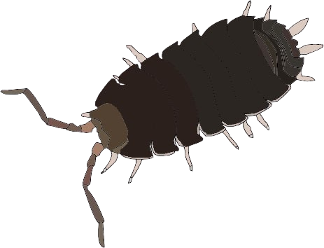
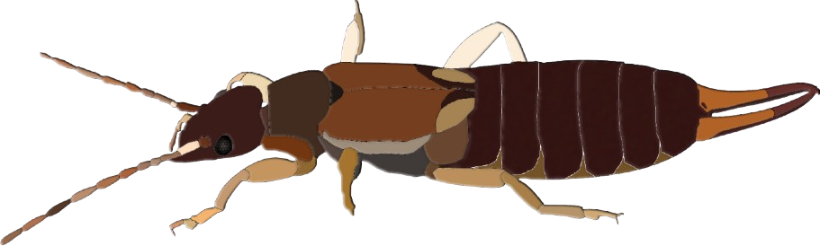

Інші комахи
Ця категорія включає різноманітні види комах, які не належать до основних груп шкідників, але все ж можуть мати важливе значення в екосистемах та сільському господарстві. До "Інших комах" відносяться корисні види, такі як бджоли, що запилюють рослини, та жуків-сапрофагів, які сприяють розкладанню органічних матеріалів. Однак деякі з них можуть бути і потенційними шкідниками, наприклад, мурахи, які іноді захищають попелиць від природних ворогів. Знання про ці комах є важливим для розуміння екологічного балансу, а також для ефективного управління агроекосистемами, де важливо зберігати корисних комах і контролювати шкідливих.
Мокриця
Опис: Мокриця — це маленька комаха, яка часто зустрічається в вологих місцях, під камінням або в опалому листі.
Поширення в Україні: Поширена по всій території, особливо в лісах і вологих луках.
Уховертка
Опис: Уховертка — комаха з довгими вусиками, що часто мешкає в ґрунті, під камінням і в тріщинах.
Поширення в Україні: Зустрічається на всій території, особливо в лісах і парках.